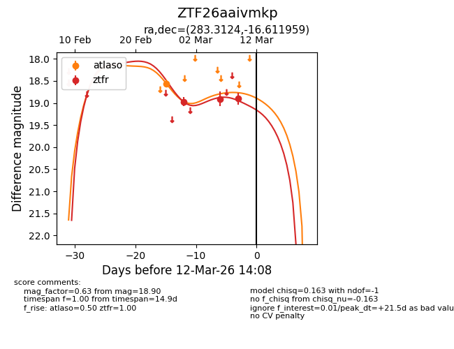
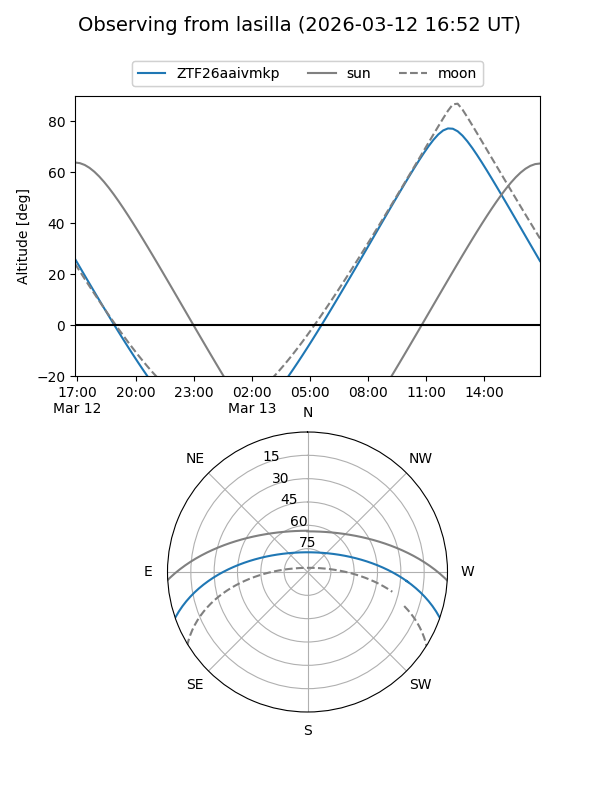
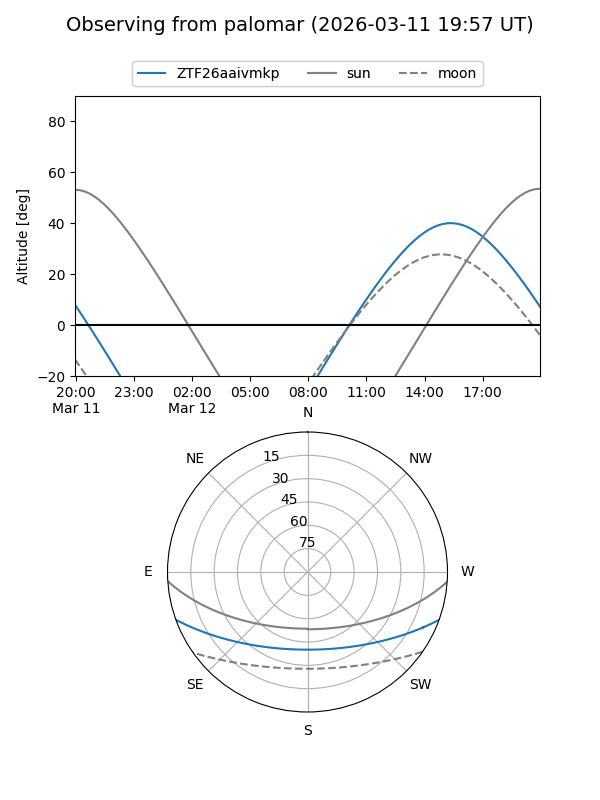
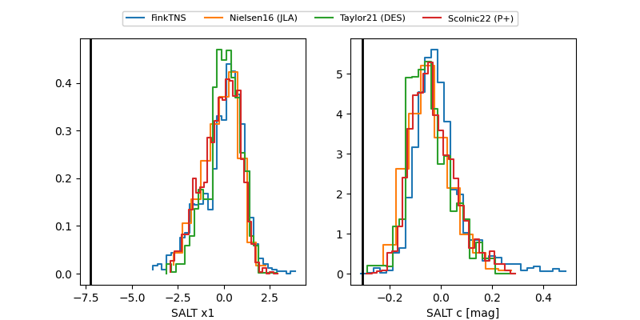

ZTF26aaivmkp
Target ZTF26aaivmkp at 2026-03-12 14:10
Aliases and brokers:
FINK: link
Lasair: link
ALeRCE: link
alt names
ZTF26aaivmkp (ztf,fink_ztf)
Coordinates:
equatorial (ra, dec) = 283.3124,-16.61196
equatorial (HMS+DMS) = 18:53:14.97,-16:36:43.05
galactic (l, b) = (18.2545,-7.88017)
Flags:
Photometry:
last atlaso=18.56, ztfr=18.90
1 atlaso, 3 ztfr detections
Lightcurve

Visibility


Additional plots
